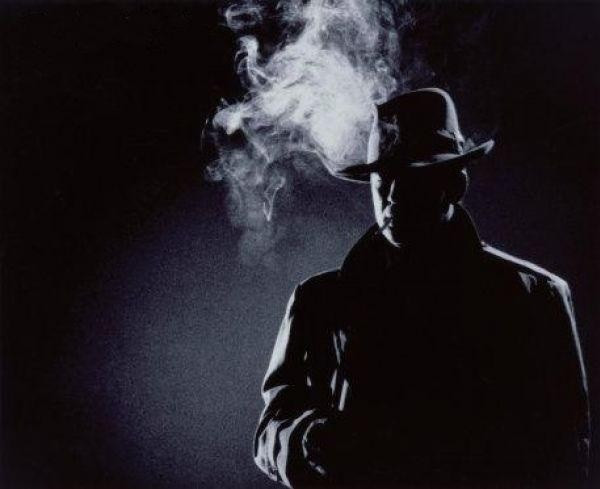

You question Andrew solo.
Andrew is asked if Jamie had anything to do with his father death.
He then starts to ramble on about how neither of them did.
By saying this it makes you feel a connection between them two and Donalds passing.
You ask Andrew if they both had a good relationship with their father.
A delayed response shows he had to think about this and makes you sense a disconnection with their late father.
